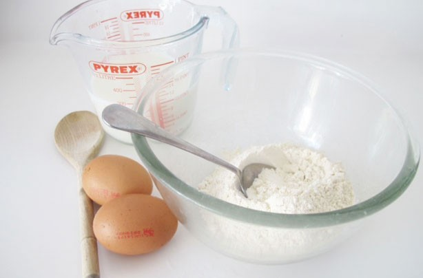
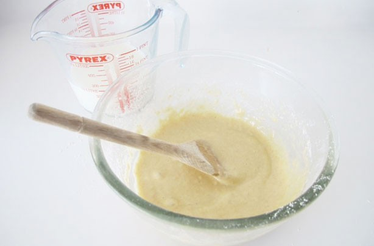
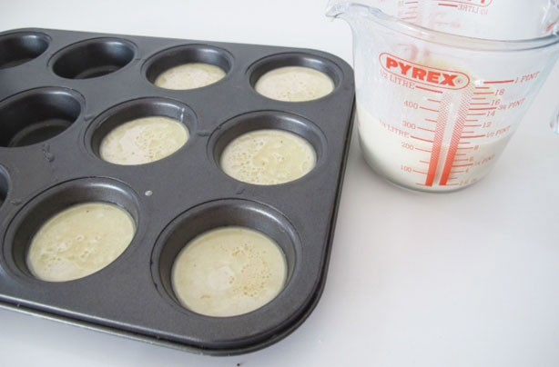
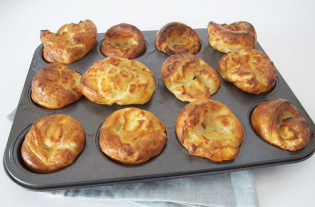

Yorkshire Puddings Recipes
Everyone loves crisp puffy Yorkshire puddings with roast beef and gravy. Made from a batter of eggs, flour and milk they are quick, simple and cheap to make. You can bake Yorkshire pudding in one large tin, cutting it into portions to serve, or in individual bun tins or slightly larger Yorkshire pudding tins. This basic batter can also be used to make toad-in-the-hole baked in a large tin with sausages, and can be flavoured with chopped herbs such as sage or parsley.
Ingredients
- 100g plain flour
- 3 eggs
- 175ml whole milk
- 1tsp salt
- 4tbsp vegetable oil
- 1tbsp wholegrain mustard
- 1tbsp freshly chopped thyme
Steps
-
Heat oven to 220C/425F/Gas mark 7. Sieve the flour and salt into a large bowl. Make a well in the centre and pour in the eggs and half the milk.

-
Slowly mix, incorporating the flour as you go, until smooth. Whisk in the remaining milk and look for tiny bubbles on the surface. Rest for 10 minutes in the fridge.

-
Divide the oil between a 12-hole bun tin and heat in the oven for for 5 minutes, until the oil is smoking hot. Mix mustard, black pepper and thyme into rested batter, then pour batter evenly into the bun tin.

-
Bake for 15-20 minutes until risen and golden brown.

- Congrats.You've made your own Yorkshire Pudding with your bare hands. Enjoy this delicious Yorkshire Pudding!

Now, it's ready to eat!Enjoy your day